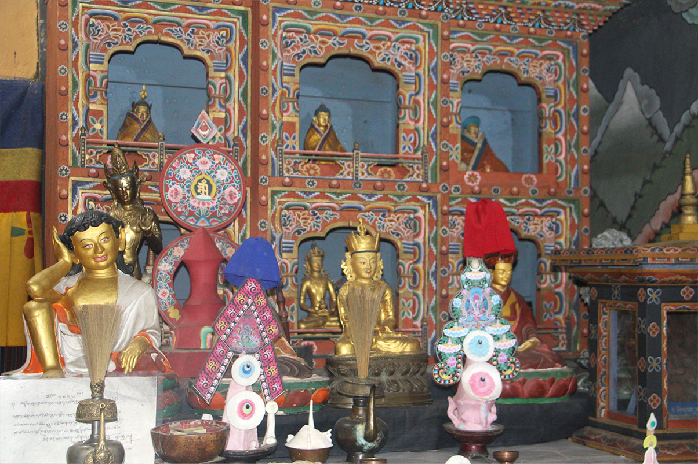

Inside the Manor
Top Floor
Kitchen, hearth and altar, the heart of the home, where the household gathered, ate and prayed together.

Kitchen – Thabtshang
The kitchen (Thabtshang) forms the core of household activities. With the only hearth inside the house, the kitchen is the warmest room. Apart from cooking, the family uses it for eating, entertaining, and sleeping, especially during cold nights.
There are three main rooms on this floor. The first is the kitchen, where the core household activities take place. It is usually located on the second floor, planned so that it is close to the living and shrine rooms, which makes it convenient for serving meals to guests and monks during ritual ceremonies. Apart from cooking, it is also used as the dining room.
The next room is the main living area, known as the baryap. The family uses this well-ventilated room for eating, sleeping, entertaining guests, weaving, and storing bedding, clothes, and other household items. The grandparents occupy a prominent seat in this room, usually near a window. They recite prayers, read religious texts, relax, and give instructions and advice to the family members.
The final room is the altar room, known as the choesham. The choesham forms the spiritual core of the home. Family members perform their daily worship here. This room is treated with respect because it is associated with sacred objects and images. Annual religious ceremonies are also performed here by the monks. The choesham can serve as a guest room for monks and special overnight guests. It should always be kept clean, as it is the sacred room where religious artifacts and images are enshrined and ritual prayers are conducted.
What's Here
Three rooms, the family's daily life.
The thabtshang kitchen
Warmed by the household hearth.
The Baryap living area
Hung with swords and ceremonial scarves.
The Choesham altar room
Home to the Drum, Cymbals, Bell and Conch Shell.